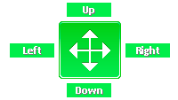

設定が見つかりませんでした。
検索キーワードがないため、全ての設定を表示します。
起動時に開くページ
タブ動作スタイル
タブのマルチスレッド/プロセス動作を指定します。変更は、次回起動時から有効です。
現在のタブ動作スタイル:
タブ読み込みスタイル
複数タブの読み込み動作を指定します。変更は、次回起動時から有効です。シングルスレッド、または、スクリプトで作成したタブには無効です。
現在の設定:
アプリケーション関連付け - registerApplication
アプリケーションの関連付けを行います。Vista,7は、管理者権限が必要です。
既定のブラウザを選択します。
アプリケーションの関連付けをレジストリに設定します。レジストリに設定した後、「既定のブラウザ選択画面」から、アプリケーションを選択してください。アプリケーションを削除するとき、レジストリから削除することを推奨します。
応答なしページの検出
画面スタイル
画面スタイルを指定します。変更は、次回起動時から有効です。
現在の設定:
複数起動設定
ホームページ
使用するホームページを設定します。ホームページには、Internet Explorer のホームページ、タブリストが選択できます。
ブックマークの設定
使用するブックマークの設定を行います。ブックマークの設定は、「適用ボタン」を押さなくても反映されます。既定のブックマークは削除できません。
既定のブックマーク内容が、コマンドバーのお気に入り内容となります。
ブックマークの追加
使用するブックマークを追加します。追加したブックマークは、サイドバー、ツールバーで表示できるようになります。
| Internet Explorer お気に入り | ||
Internet Explorer形式のお気に入りを使用します。設定で任意のフォルダを指定できます。 | ||
| Google Chrome ブックマーク | ||
Google Chrome ブックマークを使用します。設定で任意のブックマークファイルを指定できます。 | ||
| Firefox ブックマーク | ||
Firefox ブックマークを使用します。設定で任意のブックマークファイルを指定できます。 | ||
| Opera ブックマーク | ||
Opera ブックマークを使用します。設定で任意のブックマークファイルを指定できます。 | ||
| タブリスト | ||
アプリケーションで保存したタブリストを表示します。 | ||
ツールの設定
使用しているツールの設定を行います。ツールの設定は、「適用ボタン」を押さなくても反映されます。
ツールの追加
使用するツールを追加します。ツールは、サイドバー・ツールバーに表示されます。
| Internet Explorer 表示履歴 | ||
Internet Explorerの表示履歴を表示します。 | ||
| リンク抽出ツール | ||
アクティブなページから様々な条件でリンクを抽出します。 | ||
ドロップアクション
ドロップアクションで表示されるボタン、ボタンサイズを変更します。
スーパードラッグ＆ドロップ

ブラウザ上でリンクやテキストをドラッグしたとき、ドロップした方向により、さまざまな動作を実行します。方向には、上(Up)、下(Down)、左(Left)、右(Right)動作を指定できます。また、Shiftキー、Ctrlキーを押しながらの動作も指定できます。
スーパードラッグ＆ドロップ動作を標準設定に戻します。
スーパードラッグ＆ドロップ動作を標準設定に戻します。
Up(上方向) LinkUp(上方向) Text
Down(下方向) LinkDown(下方向) Text
Left(左方向) LinkLeft(左方向) Text
 Right(右方向) LinkRight(右方向) Text
Right(右方向) LinkRight(右方向) Text
Down(下方向) LinkDown(下方向) Text
Left(左方向) LinkLeft(左方向) Text
Right(右方向) LinkRight(右方向) Textマウスジェスチャ
マウス動作補助
ページの制御
イメージパンニング
イメージパンニングの有効無効を設定します。イメージパンニングは、画像のみのページで機能します。画像のみのページで、画像がページに収まらないとき、マウスボタンを押したままマウスを動かすとスクロールできます。
ジャンプリスト
ジャンプリストのアイテムを変更します。変更した場合、次回の初回起動時から有効です。
タスクバー
確認メッセージ・タスクトレイ・IME
アプリケーション終了後のデータ削除
メモリ設定
クラッシュ設定
新規タブのURL
新しいタブを開くときのURLを指定します。cmd:newで開くときのURLに相当します。
タブの最大数設定
タブバーのスタイル
タブ幅の指定(シングル・マルチライン)
タブ幅の指定(自動縮小シングルライン)
タブのフォント
タブのフォント: 既定のフォント - tabFont
指定されたフォントがシステムにない場合、既定のフォントが使用されます。フォントが大きすぎる場合は、最大で表示できるサイズまで丸められます(例：タブスキンが高さ18ポイントまでしか表示できないとき、タブのフォントは、18ポイントまで丸められます)。
タブバーの位置
タブバーの位置の変更は、画面スタイルを旧スタイル(oldStyle)にする必要があります。
新規タブの追加位置
新規タブを開くときの追加位置を指定します。この設定はアプリケーション全体で有効な設定です。
タブリストを開くときのタブ追加位置を指定します。
単一起動で外部から起動されたときのタブ追加位置を指定します。
新規タブのアクティブ指定
ポップアップの開き方
ブラウザでの検索設定
アクティブタブを閉じたときの動作
タブの選択動作
最後のタブを閉じたときの動作
最後のタブを結合したときの動作
最後のタブを別のウインドウに結合したときの動作を指定します。
タブスナップショット
タブオプション
タブのマウス動作
タブ上でのマウス動作を標準設定に戻します。
タブ上でのマウス動作を指定します。クリックとダブルクリックの動作を両方指定することは推奨しません(例:ダブルクリックの動作を指定したときは、クリックの動作を「なし」にする)。
タブ背景(タブがない部分)のマウス動作
タブ背景でのマウス動作を標準設定に戻します。
タブ背景でのマウス動作を指定します。クリックとダブルクリックの動作を両方指定することは推奨しません(例:ダブルクリックの動作を指定したときは、クリックの動作を「なし」にする)。
タブ上のキー＋マウス動作
タブ上でのキー＋マウス動作を標準設定に戻します。
タブ上でのキーを押しながらのマウス動作を指定します。
タブ背景(タブがない部分)のキー＋マウス動作
タブ背景でのキー＋マウス動作を標準設定に戻します。
タブ背景でのキーを押しながらのマウス動作を指定します。
ブラウザ上のクリック・ダブルクリック動作
ブラウザ上でのクリック・ダブルクリック動作を標準設定に戻します。
ブラウザ上でのクリック・ダブルクリックの動作を指定します。第4,5ボタンは、クリック動作を指定できます。クリックとダブルクリックの動作を両方指定することは推奨しません(例:ダブルクリックの動作を指定したときは、クリックの動作を「なし」にする)。
ブラウザ上の左、右ボタン、Ctrlキー、Shiftキーを押しながらの動作
ブラウザ上での左、右ボタン、Ctrlキー、Shiftキーを押しながらの動作を標準設定に戻します。
ブラウザ上での左、右ボタン、Ctrlキー、Shiftキーを押しながらの動作を指定します。
閉じたタブの保存
進む・戻る履歴
レンダリングエンジンの指定
Internet Explorerのバージョンで使用するレンダリングエンジンは、以下です。
この設定は、レジストリHKEY_CURRENT_USER\Software\Microsoft\Internet Explorer\Main\FeatureControl\FEATURE_BROWSER_EMULATIONへアプリ名を登録します。
| 設定値 | IE11 | IE10 | IE9 | IE8 | IE7 | IE6 |
| 最新のレンダリング | IE11互換 | IE10互換 | IE9互換 | IE8互換 | IE7互換 | IE6互換 |
| 常にIE11レンダリング | 常にIE11 | 常にIE10 | 常にIE9 | 常にIE8 | IE7互換 | IE6互換 |
| IE11互換レンダリング | IE11互換 | IE10互換 | IE9互換 | IE8互換 | IE7互換 | IE6互換 |
| 常にIE10レンダリング | 常にIE10 | 常にIE10 | 常にIE9 | 常にIE8 | IE7互換 | IE6互換 |
| IE10互換レンダリング | IE10互換 | IE10互換 | IE9互換 | IE8互換 | IE7互換 | IE6互換 |
| 常にIE9レンダリング | 常にIE9 | 常にIE9 | 常にIE9 | 常にIE8 | IE7互換 | IE6互換 |
| IE9互換レンダリング | IE9互換 | IE9互換 | IE9互換 | IE8互換 | IE7互換 | IE6互換 |
| 常にIE8レンダリング | 常にIE8 | 常にIE8 | 常にIE8 | 常にIE8 | IE7互換 | IE6互換 |
| IE8互換レンダリング | IE8互換 | IE8互換 | IE8互換 | IE8互換 | IE7互換 | IE6互換 |
| 指定しない | IE7互換 | IE7互換 | IE7互換 | IE7互換 | IE7互換 | IE6互換 |
デフォルトセキュリティ
タブを開くときのセキュリティを指定します。スクリプトの実行などoffにした場合、ページによっては正常に動作しません。その場合は自己責任となります。
セキュリティの制御
Tridentの接続数設定
変更は、次回起動時から有効です。
Tridentの詳細設定
変更は、次回起動時から有効です。
InternalFeature設定
変更は、次回起動時から有効です。InternalFeature設定をonにすると、パフォーマンスが向上します。
プロキシサーバ
アプリケーションで使用するプロキシサーバを指定します。
ユーザ設定プロキシサーバ一覧
プロトコル毎にプロキシサーバを指定するときは、プロキシサーバ名に「http=proxy1:8080;https=proxy2:8080」のように入力します。プロキシサーバを通したくないアドレスは、例外に入力してください。
例外の入力例：ローカルとmicrosoft.comにプロキシサーバを通さない場合 「<local>;*.microsoft.com」
例外:
現在の設定:
なし
UserAgent
指定すると、常に指定したユーザエージェントでHTTPリクエストが行われます。ページのスクリプトでのnavigator.userAgentの値も指定した値に変わり、ページのよっては誤動作する可能性があり設定には注意してください。
ユーザエージェント一覧
Browser Helper Objects(BHO)
チェックをつけると、BHOが有効になります。 BHOは、Internet Explorer用の拡張機能のため、有効にしても正常に動作しない場合があります。また、複数有効にすると速度が低下する場合があります。
スクリプト個別動作設定
スクリプトで個別の動作設定が可能なとき、設定を行います。
ページスクリプトオプション
その他の設定
URLアクション
読み込み前のアクション一覧
:
現在の設定:
なし
読み込み後のアクション一覧
:
現在の設定:
なし
スタイルシート設定
サイト毎の設定一覧
:
現在の設定:
なし
URLのパターンに一致したスタイルシートが適用されます。上から順にマッチングしていき、１つのパターンに一致すると、それ以降のパターンはマッチングされません。URLのパターンはワイルドカード(*,?)が使用できます。
ユーザ定義のスタイルシートは、setting\userStyleSheet配下に置いてください。setting\userStyleSheet配下に置いた拡張子cssファイルが、項目として選択できるようになります。
ハイライト
フレームへの追加ボタン - frameAdditionalButton
使用中のツールバー設定 - toolbarSetting
「詳細設定」から、各ツールバーの動作設定を行なえます。ツールバー設定は、「適用ボタン」を押さなくても反映されます。ブックマークのツールバー削除できません。ブックマークのツールバーを削除するときは、「ブックマークの設定」から行えます。
ツールバーの追加 - addToolbar
「ツールバー追加」から行なってください。同じツールバーでも複数追加可能です。
| 検索バー | ||
インターネットをさまざまな検索エンジンで検索できるツールバーです。 | ||
| 標準ツールバー | ||
標準コマンドやスクリプトのボタンを持つツールバーです。 | ||
ハイライトバーの位置
インライン検索バーの位置
ショートカットキー
ショートカットキーを標準設定に戻します。
ショートカットキーの追加： 追加できません(同じショートカットキーが存在)
:
現在のショートカットキー: